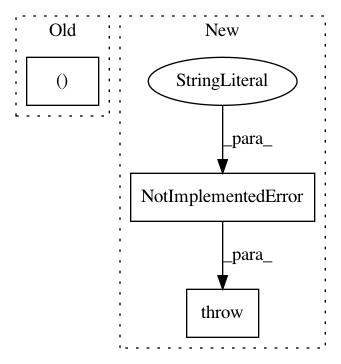

6aa2cf60e7b62c83548a27c80a1f34e38160e0e1,softlearning/algorithms/sac.py,SAC,_init_actor_update,#SAC#,278
Before Change
actions, log_pi = self._policy.actions_for(
observations=self._observations_ph, with_log_pis=True, reuse=True)
log_pi = tf.reshape(log_pi, (-1, 1))
log_alpha = tf.get_variable(
"log_alpha",
After Change
- min_Q_log_target
- policy_prior_log_probs)
else:
raise NotImplementedError(
"TODO(hartikainen): Make sure to stop policy gradients"
" correctly. See old GaussianPolicy implementation.")
policy_kl_losses = (
log_pis * tf.stop_gradient(
alpha * log_pis - min_Q_log_target + V_value
- policy_prior_log_probs))
In pattern: SUPERPATTERN
Frequency: 3
Non-data size: 3
Instances
Project Name: rail-berkeley/softlearning
Commit Name: 6aa2cf60e7b62c83548a27c80a1f34e38160e0e1
Time: 2018-10-28
Author: hartikainen@berkeley.edu
File Name: softlearning/algorithms/sac.py
Class Name: SAC
Method Name: _init_actor_update
Project Name: rail-berkeley/softlearning
Commit Name: 35277ef2af43d669608769051284aae26a785fbb
Time: 2018-07-24
Author: kristian.hartikainen@gmail.com
File Name: softlearning/environments/image_pusher.py
Class Name: ImageForkReacherEnv
Method Name: compute_reward
Project Name: rail-berkeley/softlearning
Commit Name: 9caa24c58689c1d6f3d982f623ceab8f78e7362d
Time: 2018-10-20
Author: hartikainen@berkeley.edu
File Name: examples/pusher_combine.py
Class Name:
Method Name: run_experiment